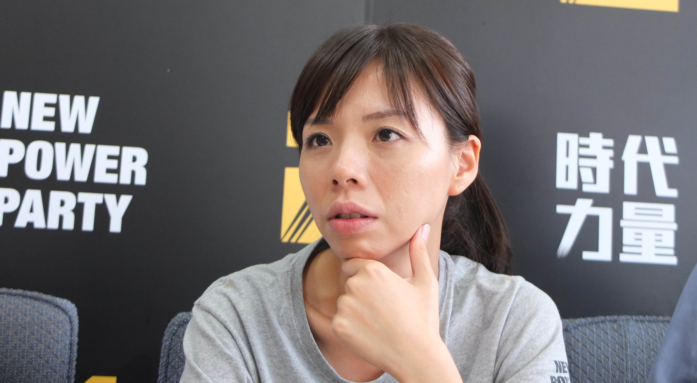
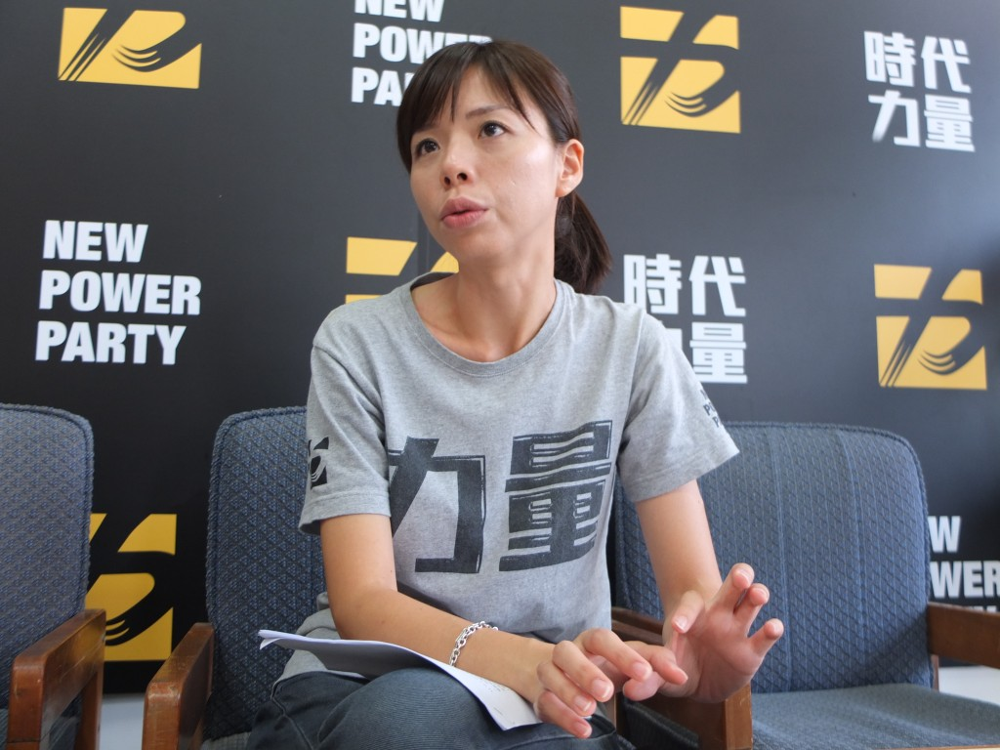

photo credit：關鍵評論網 羊正鈺
這一次，立法院再不到一百天就有機會重新洗牌了，TNL試著扮演好關鍵瞎子的角色，從不同的角度帶大家一起思考「我們該選出什麼樣的立委？」
我們用五個關鍵問題，來問剛下台的政務官、國民兩黨的黨鞭、第三勢力候選人、資深媒體人、政論節目主持人、以及青年代表，一起來看看他們的真情流露、直言無忌吧：
洪慈庸（洪姊），自幼和弟弟洪仲丘一樣都是被洪家父母收養，洪仲丘案發生時擔任遠綠科技公司行銷企劃一職。案發生後，洪慈庸行使公司准允無限期休假處理家務事之權利，成為洪家對外發聲的窗口，面對外界及政府官員態度不卑不亢，更數度以犀利言詞抨擊軍檢。
洪案落幕後，洪慈庸多次聲明不入黨、沒有從政念頭，但最後考量台灣年輕人在兩大黨掌控下難以參政，希望運用累積的能量促進青年參政。她在2月24日宣布代表時代力量政黨參選（台中市第三選區），主要對手為國民黨籍、已擔任地方民代長達25年並爭取連任的楊瓊瓔。
 Photo Credit: 關鍵評論網 羊正鈺
Photo Credit: 關鍵評論網 羊正鈺
洪慈庸（文後簡稱洪）： 立委四年選舉一次，但他們在立法院內到底在幹什麼、真正的立場是什麼，鮮少人知道。我們活在資訊很發達的世代，因此人民更想知道國會如何運作，可惜現今的體制並沒有提供人民相對等的資訊公開服務。
即便中央有些資料是可以查得到的，但這個資料無法有效地傳遞到地方上來，也沒有人教導人民怎麼使用、查詢，因此我覺得站在政府的角度，選民是需要教育的，因為人民有權利知道自己票選出來的立委到底做了些什麼。
►立院出代誌：為什麼我們關心的法案總是過不了？
另外對於「黨團協商」制度，其實法律都有明文說要全程錄影、錄音了，卻很少真的做到。所以未來改革重點已經不是「協商與否」，而是能不能針對此項規定，真正落實。如果協商過程中連最基本的公開都做不到，如何在第一階段爭取到人民的信任？
我認為比起協商，真正可以做到民主的方式是「辯論」，但為什麼黨團協商現在是必要的？因為要有效率。因此如果想要做到高效率，我覺得不一定要把這個制度廢掉，但必須要有其他配套措施配合。
洪：在地方上我有機會都會跟我的選民說，一位好的立委應該要承載著地方的聲音到國會，而不應該變成黨意的投票部隊。
選民應該了解什麼事情可能會影響自己，例如核四、服貿的法案什麼時候要修正？ 一個好的候選人必須要跟選民說，既然要改善這件事，那我的立場是什麼、對手的立場又是什麼，讓他們慢慢辨別中央級的民意代表是否與自己的理念相同，再選擇要不要投給他；而不是看一位候選人是否常出現在大街上、商家內與選民握手致意。
洪：如果年輕人想針對議題，或對立法院的運作做更深的了解，很多不錯的網路平台像是沃草、國會無雙，或是立法院議會轉播以及立委投票指南等，年輕更人可以從容易接觸的媒體擷取資訊。
另外像是我還簽署了「國會承諾書」，若被評「待觀察」就辭職以示負責。
公督盟扮演的角色等同是監斬官，如果做不好，就由他們來砍頭。再者，媒體也全都錄下來了，就算公督盟大發慈悲心不「斬」，人民也會來「斬」我！（笑）
洪：不管是我或時代力量，都一直認為「把民主政治往前推進」是最最最重要的事情。
我和Freddy甚至開玩笑的說過，進入國會第一天就要提案修正《政黨法》和《不當黨產條例》，地方上流行一句話「選舉無師父，用錢買就有（台語）」，在這次參選後感覺尤其深刻。
在政黨資源分配如此不正義的情況下，我們如何抵擋資源如此龐大的政黨？這就是為何台灣政治壟斷、不親民，又無法讓有理想的人勝出。因此如果改善政治風氣，這是必須優先處理的！
洪：印象最好的絕對是尤美女委員。
其實老實說，在仲丘的案子發生前我並不是這麼了解她，加上她是不分區立委，在媒體上的曝光也不多。但她在幫忙處理仲丘案時，雖然自己所屬的委員會和國防事務沒有關係，但她從頭至尾都非常認真、積極的處理，就連現在都還持續的在關心。
反之，我覺得台中的國民黨立委（像是被列入割闌尾的蔡錦隆）都表現得「差不多」，他們平常對於重大法案、議題都不太會表態，但是到了要選舉了才開始看風向，開始喊說自己支持還是反對，尤其是對於死刑一直都用這種態度。
洪：仲丘出事時，我選區的楊瓊瓔委員接到通報後的確第一時間過來了。但她可能至始至終都認為這是單純的中暑、意外事件，所以她選擇按照自己的SOP走：一大早過來、握手致意、關心、離開。並沒有持續追蹤，更沒有掌握到我們的困難是什麼。
面對仲丘的案子，我們需要法律的諮詢及協助，一開始我們去軍警開會時，完全沒有任何擁有法律背景的人陪同，我們真的什麼都不懂。照理來說立委當時是可以派本身配置的律師來陪我們去軍檢署開會的，但她只派她的「阿姨」陪我們去軍隊⋯⋯
這件事情若是發生在一般家庭，可能就不了了之、草草結束了。但很不幸的是，仲丘家裡有我這個超級追蹤型的姊姊（笑），也加上有很多人的幫忙，我們才可以得知真相。
洪：經費的部分以媒體文宣的部分花最多，每場活動辦了都會附贈礦泉水、小文宣、面紙等。光面紙這部分，我們一開始印了10萬包，但我們選區有30萬人，現在還要繼續追。
這區的前輩也說，以前大家都印製少60萬包，預估我的選區大致上也要100萬包，一包算一塊錢就好，我們也要花上百萬。
至於看板部分，如果有贊助就還吃得消，但有些必須用租的，一面可能10幾萬，還要加上吊掛維修費用。因此如果要到「足夠」的程度，一場選舉下來，四個區域就要花上1~200萬，可怕的是，我們的對手的看板數至少多上三到四倍、每塊的面積也比我們大上兩到三倍。
另外，宣傳車在中南部選區來說是必要的，尤其是長輩們，他們會依據你宣傳車出現的頻率和嘈雜程度來判定候選人到底是「選真的還選假的」。
洪慈庸：為什麼地方上都說「選舉無師父，用錢買就有」？
採訪：羊正鈺、李牧宜
對於立法院、立委們，或許很多人都是透過報章雜誌、電視節目而認識他們。如今在網路、社群發燒之下立法院一個五秒鐘的畫面、委員們在臉書說一句話都可能因此瘋傳，但是當我們只透過片面、簡短的資訊來解讀，是否就像「瞎子摸象」一樣對我們國會最高殿堂有誤解呢？
這一次，立法院再不到一百天就有機會重新洗牌了，TNL試著扮演好關鍵瞎子的角色，從不同的角度帶大家一起思考「我們該選出什麼樣的立委？」
我們用五個關鍵問題，來問剛下台的政務官、國民兩黨的黨鞭、第三勢力候選人、資深媒體人、政論節目主持人、以及青年代表，一起來看看他們的真情流露、直言無忌吧：
《人物系列之六》時代力量立委候選人 洪慈庸
洪慈庸（洪姊），自幼和弟弟洪仲丘一樣都是被洪家父母收養，洪仲丘案發生時擔任遠綠科技公司行銷企劃一職。案發生後，洪慈庸行使公司准允無限期休假處理家務事之權利，成為洪家對外發聲的窗口，面對外界及政府官員態度不卑不亢，更數度以犀利言詞抨擊軍檢。
洪案落幕後，洪慈庸多次聲明不入黨、沒有從政念頭，但最後考量台灣年輕人在兩大黨掌控下難以參政，希望運用累積的能量促進青年參政。她在2月24日宣布代表時代力量政黨參選（台中市第三選區），主要對手為國民黨籍、已擔任地方民代長達25年並爭取連任的楊瓊瓔。
Photo Credit: 關鍵評論網 羊正鈺
問題一、立法院運作到底出了什麼問題？
洪慈庸（文後簡稱洪）： 立委四年選舉一次，但他們在立法院內到底在幹什麼、真正的立場是什麼，鮮少人知道。我們活在資訊很發達的世代，因此人民更想知道國會如何運作，可惜現今的體制並沒有提供人民相對等的資訊公開服務。
即便中央有些資料是可以查得到的，但這個資料無法有效地傳遞到地方上來，也沒有人教導人民怎麼使用、查詢，因此我覺得站在政府的角度，選民是需要教育的，因為人民有權利知道自己票選出來的立委到底做了些什麼。
►立院出代誌：為什麼我們關心的法案總是過不了？
另外對於「黨團協商」制度，其實法律都有明文說要全程錄影、錄音了，卻很少真的做到。所以未來改革重點已經不是「協商與否」，而是能不能針對此項規定，真正落實。如果協商過程中連最基本的公開都做不到，如何在第一階段爭取到人民的信任？
我認為比起協商，真正可以做到民主的方式是「辯論」，但為什麼黨團協商現在是必要的？因為要有效率。因此如果想要做到高效率，我覺得不一定要把這個制度廢掉，但必須要有其他配套措施配合。
問題二、我們需要一個什麼樣的「好立委」？
洪：在地方上我有機會都會跟我的選民說，一位好的立委應該要承載著地方的聲音到國會，而不應該變成黨意的投票部隊。
選民應該了解什麼事情可能會影響自己，例如核四、服貿的法案什麼時候要修正？ 一個好的候選人必須要跟選民說，既然要改善這件事，那我的立場是什麼、對手的立場又是什麼，讓他們慢慢辨別中央級的民意代表是否與自己的理念相同，再選擇要不要投給他；而不是看一位候選人是否常出現在大街上、商家內與選民握手致意。
真正有下功夫的立委，是要把地方的民意帶到國會，再把國會中的投票、討論狀況帶回地方，這才叫真正的跟人民交代。我覺得做到這個循環不是一件很難的事情，可惜的是，現在真正落實的委員並不多。
- 洪慈庸
問題三、選民該怎麼檢視候選人適不適任？
洪：如果年輕人想針對議題，或對立法院的運作做更深的了解，很多不錯的網路平台像是沃草、國會無雙，或是立法院議會轉播以及立委投票指南等，年輕更人可以從容易接觸的媒體擷取資訊。
另外像是我還簽署了「國會承諾書」，若被評「待觀察」就辭職以示負責。
簽完承諾書後很多人覺得我超勇敢，但我覺得真的要被評為「待觀察立委」沒有這麼容易，我自己也是一個很怕「歹勢」的人，如果做個立委可以做到這麼丟臉，我應該也沒臉再繼續做了。
現在新生代應該更能夠接受檢視，如果害怕檢視就乾脆不要出來選了，且那張承諾書其實不是公督盟做的，而是我自己寫的「自我承諾書」，「待觀察立委」這項之外，前面三項有關國會工作日誌、問政報告及針對重大議案的解釋更是重點。
- 洪慈庸
公督盟扮演的角色等同是監斬官，如果做不好，就由他們來砍頭。再者，媒體也全都錄下來了，就算公督盟大發慈悲心不「斬」，人民也會來「斬」我！（笑）
Photo Credit: 洪慈庸辦公室提供
問題四、2016年第一會期，迫切需要通過的法案有哪些？
洪：不管是我或時代力量，都一直認為「把民主政治往前推進」是最最最重要的事情。
我和Freddy甚至開玩笑的說過，進入國會第一天就要提案修正《政黨法》和《不當黨產條例》，地方上流行一句話「選舉無師父，用錢買就有（台語）」，在這次參選後感覺尤其深刻。
在政黨資源分配如此不正義的情況下，我們如何抵擋資源如此龐大的政黨？這就是為何台灣政治壟斷、不親民，又無法讓有理想的人勝出。因此如果改善政治風氣，這是必須優先處理的！
問題五、現任立委中哪位是您心目中印象最深刻？
洪：印象最好的絕對是尤美女委員。
其實老實說，在仲丘的案子發生前我並不是這麼了解她，加上她是不分區立委，在媒體上的曝光也不多。但她在幫忙處理仲丘案時，雖然自己所屬的委員會和國防事務沒有關係，但她從頭至尾都非常認真、積極的處理，就連現在都還持續的在關心。
反之，我覺得台中的國民黨立委（像是被列入割闌尾的蔡錦隆）都表現得「差不多」，他們平常對於重大法案、議題都不太會表態，但是到了要選舉了才開始看風向，開始喊說自己支持還是反對，尤其是對於死刑一直都用這種態度。
問題六、你曾經在洪案期間求助立委，你認為選民需要的是什麼？現在的立委制度又真的能做到嗎？
洪：仲丘出事時，我選區的楊瓊瓔委員接到通報後的確第一時間過來了。但她可能至始至終都認為這是單純的中暑、意外事件，所以她選擇按照自己的SOP走：一大早過來、握手致意、關心、離開。並沒有持續追蹤，更沒有掌握到我們的困難是什麼。
面對仲丘的案子，我們需要法律的諮詢及協助，一開始我們去軍警開會時，完全沒有任何擁有法律背景的人陪同，我們真的什麼都不懂。照理來說立委當時是可以派本身配置的律師來陪我們去軍檢署開會的，但她只派她的「阿姨」陪我們去軍隊⋯⋯
這件事情若是發生在一般家庭，可能就不了了之、草草結束了。但很不幸的是，仲丘家裡有我這個超級追蹤型的姊姊（笑），也加上有很多人的幫忙，我們才可以得知真相。
經過仲丘的事情，我更深刻的體會到，很多事情雖然不是中央級的民意代表必須處理的，但這些都可以由他分配給議員，或是經過相關人員判定後，送到「可以解決問題」的單位。
立委真的不應該放太多時間在跑選區上，但必須會經營地方性的幕僚團隊，確認每個環節是扣緊的，才可以真正幫助到人民。而不是為了表現出「我有到場」而什麼都親自下馬處理，但最後都草草結束，完全沒有解決人民的問題。
立委真的不應該放太多時間在跑選區上，但必須會經營地方性的幕僚團隊，確認每個環節是扣緊的，才可以真正幫助到人民。而不是為了表現出「我有到場」而什麼都親自下馬處理，但最後都草草結束，完全沒有解決人民的問題。
- 洪慈庸

Photo Credit: 關鍵評論網 羊正鈺
問題七、相比大黨的候選人每次選舉都至少花上千萬元，你運用經費的方式有什麼不一樣？又都花在哪？
洪：經費的部分以媒體文宣的部分花最多，每場活動辦了都會附贈礦泉水、小文宣、面紙等。光面紙這部分，我們一開始印了10萬包，但我們選區有30萬人，現在還要繼續追。
這區的前輩也說，以前大家都印製少60萬包，預估我的選區大致上也要100萬包，一包算一塊錢就好，我們也要花上百萬。
至於看板部分，如果有贊助就還吃得消，但有些必須用租的，一面可能10幾萬，還要加上吊掛維修費用。因此如果要到「足夠」的程度，一場選舉下來，四個區域就要花上1~200萬，可怕的是，我們的對手的看板數至少多上三到四倍、每塊的面積也比我們大上兩到三倍。
另外，宣傳車在中南部選區來說是必要的，尤其是長輩們，他們會依據你宣傳車出現的頻率和嘈雜程度來判定候選人到底是「選真的還選假的」。
我很希望選舉經費可以盡量節省，讓這種「什麼都要大量」「錢隨便都可以灑出去」的選舉風氣降低。
因為每一分錢都是支持者的辛苦錢，他們是支持你、希望你可以改變這個社會而捐錢給你，因此當要用這些資源時我都非常小心謹慎，可以盡量少花就少花，對長久發展來說也會是很好的事情。
- 洪慈庸
責任編輯：羊正鈺
核稿編輯：楊之瑜
核稿編輯：楊之瑜
SHARE：